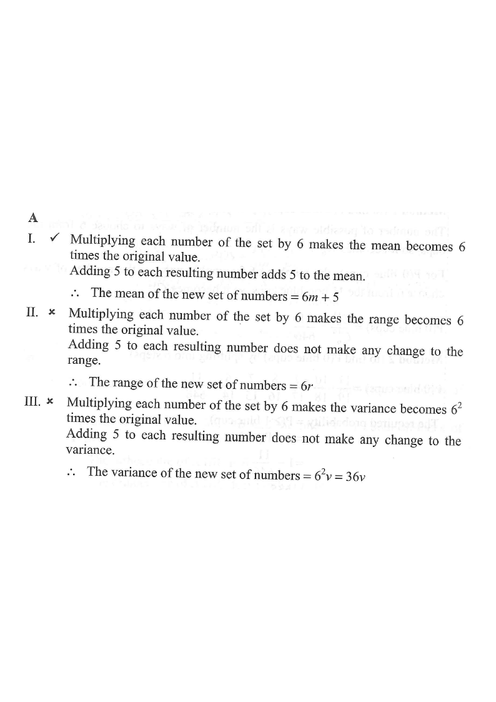

Scroll the solution on the right — the diagram highlights each step.
HKDSE 2019 · Paper 2 · Q45
Statistics — Mean, Range and Variance under a Linear Transformation
The mean, the range and the variance of a set of numbers are $m$, $r$ and $v$ respectively. Each number of the set is multiplied by $6$ and then $5$ is added to each resulting number to form a new set of numbers.
Which of the following is/are true?
I. The mean of the new set of numbers is $6m+5$.
II. The range of the new set of numbers is $6r+5$.
III. The variance of the new set of numbers is $6v+5$.
A. I only
B. II only
C. I and III only
D. II and III only

Figure (original exam diagram)
Step-by-step solution
1
Set up the transformation
Let the original set be $x_1, x_2, \dots, x_n$ with mean $m$, range $r$, variance $v$.
Each number becomes
\[ y_i = 6x_i + 5. \]
So the new mean is $\bar y$, the new range is $R_y$ and the new variance is $\sigma_y^2$.
Key idea: adding a constant shifts the whole data set; multiplying by a constant stretches it. The two effects behave very differently!
2
Check statement I — the mean
Mean under Linear Transformation\(\overline{aX+b}=a\bar{X}+b\)Here \(a=6\) and \(b=5\), so the new mean is \(6m+5\).
A shift moves the mean by the same amount: $\overline{aX+b}=a\bar X + b$.
3
Check statement II — the range
Range under Linear Transformation\(R_{aX+b}=a\,R_{X}\quad(a>0)\)The \(+5\) cancels in \((6x_{\max}+5)-(6x_{\min}+5)\), so the new range is \(6r\), not \(6r+5\).
The range is the difference between the largest and smallest values. Under $y=6x+5$,
The $+5$ cancels out, so the range becomes $6r$ — not $6r+5$.
Statement II is false ✗.
Shifts do not change spread. Only multiplication stretches the range.
4
Check statement III — the variance
Variance under Linear Transformation\(\sigma^{2}_{aX+b}=a^{2}\sigma^{2}_{X}\)Each deviation is multiplied by 6, so the variance becomes \(36v\), not \(6v+5\).
Variance is the average of squared deviations from the mean. Since $\bar y = 6m+5$,
Statement III claims $6v+5$, but the correct value is $36v$ — so statement III is false ✗.
Variance absorbs the square of the multiplier; the $+5$ is completely eliminated.
5
Numerical verification (sanity check)
Take $X=\{1,\;2,\;3,\;4,\;5\}$: $\;m=3,\;r=4,\;v=2$.
Quantity
Original $X$
New set $6X+5$
Formula check
Mean
3
23
$6(3)+5=23$ ✓
Range
4
24
$6(4)=24$ ✓ (not $29$)
Variance
2
72
$36(2)=72$ ✓ (not $17$)
Only statement I holds.
General rules: $\;\overline{aX+b}=a\bar X+b$, $\;R_{aX+b}=aR_X\ (a>0)$, $\;\sigma^2_{aX+b}=a^2\sigma^2_X$.
Answer: A (I only)
Only the mean transforms as $6m+5$; the range is $6r$ and the variance is $36v$.
PRACTICESimilar question — try it yourself
Question. The mean, the range and the variance of a set of numbers are \(5\), \(6\) and \(9\) respectively. Each number of the set is multiplied by \(4\) and then \(3\) is added to each result. Find the mean, the range and the variance of the new set of numbers.
Show the worked solution
Step 1. Write the transformation as \(y=4x+3\), so \(a=4\) and \(b=3\).
Step 2. New mean \(=4(5)+3=23\).
Step 3. New range \(=4\times6=24\) (the \(+3\) does not change the spread).
Step 4. New variance \(=4^{2}\times9=16\times9=144\).
Answer: mean \(=23\), range \(=24\), variance \(=144\)